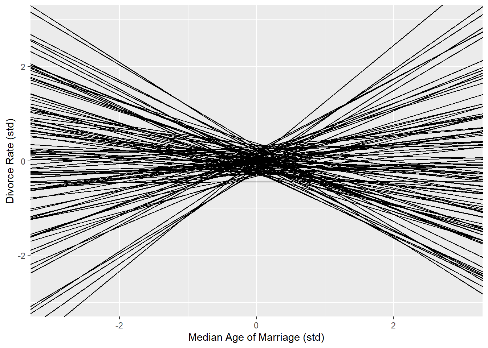
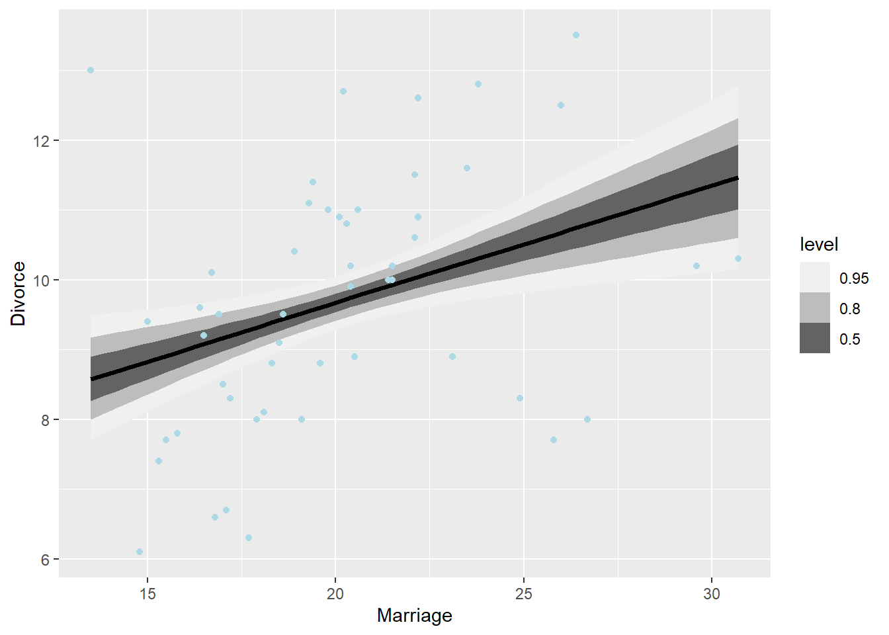
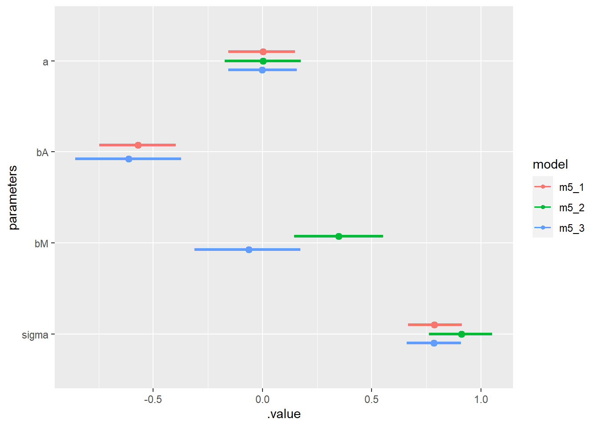
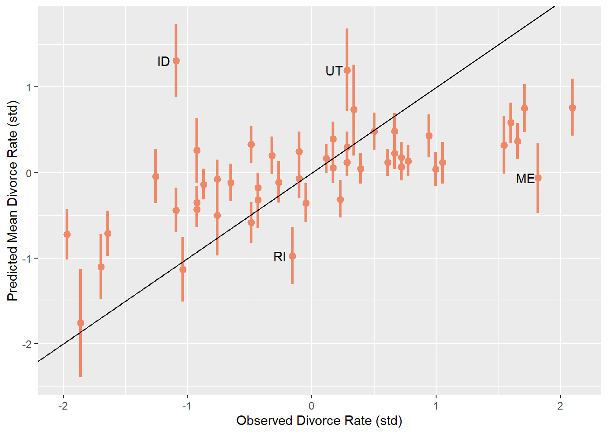

Chapter 5 The Many Variables & The Spurious Waffles
5.1 Chapter Notes
This chapter introduces multiple regression and causal models. Will try to race through it, just getting some practice visualising priors, using tidybayes to display model uncertainty etc.
Model 5.1: Modelling divorce rate on age at marriage.
\[ \begin{aligned} D_i &\sim \text{Normal}(\mu_i, \sigma) \\ \mu_i &= \alpha + \beta_A A_i \\ \alpha &\sim \text{Normal}(0, 0.2) \\ \beta_A &\sim \text{Normal}(0, 0.5) \\ \sigma &\sim \text{Exponential}(1) \\ \end{aligned} \] Here are the variables we’ll use in this model and later on:
- \(D_i\) - the 2009 divorce rate per 1,000 adults for each U.S. state.
- \(A_i\) - The 2005-2010 median age at marriage for each state
Plot of these priors:
# we generate 100 samples from our prior distributions
prior_sim_5_1 <- tibble(a=rnorm(100, mean = 0, sd=0.2),
bA = rnorm(100, mean = 0, sd = 0.5))
# and plot the lines they imply
ggplot(prior_sim_5_1)+
geom_abline(aes(slope = bA,
intercept = a))+
xlim(-3,3)+
ylim(-3,3)+
xlab("Median Age of Marriage (std)")+
ylab("Divorce Rate (std)")
Here’s the model and the posterior mean/expected divorce rate:
data(WaffleDivorce)
data_divorce <- WaffleDivorce%>%as_tibble()
data_divorce %<>% mutate(
divorce_s = (Divorce - mean(Divorce))/sd(Divorce),
marriage_s = (Marriage - mean(Marriage))/sd(Marriage),
age_s = (MedianAgeMarriage - mean(MedianAgeMarriage))/sd(MedianAgeMarriage),
)
m5_1 <- quap(
alist(
divorce_s ~ dnorm( mu , sigma ) ,
mu <- a + bA * age_s ,
a ~ dnorm( 0 , 0.2 ) ,
bA ~ dnorm( 0 , 0.5 ) ,
sigma ~ dexp( 1 )
) , data = data_divorce )
summary_5_1 <- m5_1 %>%
gather_draws(a, bA, sigma) %>%
median_qi(.width=0.89)%>%
mutate(model = "m5_1")
data_grid(data_divorce,age_s=seq_range(age_s, n = 51)) %>%
add_linpred_draws(m5_1) %>% # add draws for mean divorce rate
mutate(MedianAgeMarriage= age_s * sd(data_divorce$MedianAgeMarriage) + mean(data_divorce$MedianAgeMarriage),
Divorce = .linpred * sd(data_divorce$Divorce) + mean(data_divorce$Divorce))%>%
ggplot(aes(x = MedianAgeMarriage, y=Divorce)) +
stat_lineribbon() +
geom_point(data = data_divorce, colour = "light blue") +
scale_fill_brewer(palette = "Greys")Here’s the same plot for model 5.2 - which uses marriage rate as a predictor instead of age at marriage:
m5_2 <- quap(
alist(
divorce_s ~ dnorm( mu , sigma ) ,
mu <- a + bM * marriage_s ,
a ~ dnorm( 0 , 0.2 ) ,
bM ~ dnorm( 0 , 0.5 ) ,
sigma ~ dexp( 1 )
) , data = data_divorce )
summary_5_2 <- m5_2 %>%
gather_draws(a, bM, sigma) %>%
median_qi(.width=0.89)%>%
mutate(model = "m5_2")
data_grid(data_divorce,marriage_s=seq_range(marriage_s, n = 51)) %>%
add_linpred_draws(m5_2) %>% # add draws for mean divorce rate
mutate(Marriage= marriage_s * sd(data_divorce$Marriage) + mean(data_divorce$Marriage),
Divorce = .linpred * sd(data_divorce$Divorce) + mean(data_divorce$Divorce))%>%
ggplot(aes(x = Marriage, y=Divorce)) +
stat_lineribbon() +
geom_point(data = data_divorce, colour = "light blue") +
scale_fill_brewer(palette = "Greys")
The chapter goes on to introduce DAGs and causal reasoning, before coming back to define a regression model that uses both marriage rate and median age at marriage as predictors.
Here are a couple of possible DAGs for how marriage rate and median age of marriage influence the divorce rate:
par(mar = c(4, 4, .1, .1))
dag_div1 <- dagitty("dag{A -> M; M -> D; A -> D }")
coordinates(dag_div1) <- list( x=c(A=0,D=0.5,M=1) , y=c(A=0,M=0,D=1))
drawdag(dag_div1)
dag_div2 <- dagitty("dag{A -> M; A -> D }")
coordinates(dag_div2) <- list( x=c(A=0,D=0.5,M=1) , y=c(A=0,M=0,D=1))
drawdag(dag_div2)We can use our data to test these proposed causal models, because they make different predictions. The first has no conditional independencies:
impliedConditionalIndependencies(dag_div1)The second predicts that D is independent from M, conditional on A:
impliedConditionalIndependencies(dag_div2)## D _||_ M | AHere’s our statistical model:
\[ \begin{aligned} D_i &\sim \text{Normal}(\mu_i, \sigma) \\ \mu_i &= \alpha + \beta_M M_i + \beta_A A_i \\ \alpha &\sim \text{Normal}(0, 0.2) \\ \beta_M &\sim \text{Normal}(0, 0.5) \\ \beta_A &\sim \text{Normal}(0, 0.5) \\ \sigma &\sim \text{Exponential}(1) \\ \end{aligned} \]
m5_3 <- quap(
alist(
divorce_s ~ dnorm( mu , sigma ) ,
mu <- a + bM * marriage_s + bA * age_s ,
a ~ dnorm( 0 , 0.2 ) ,
bM ~ dnorm( 0 , 0.5 ) ,
bA ~ dnorm( 0 , 0.5 ) ,
sigma ~ dexp( 1 )
) , data = data_divorce )
summary_5_3 <- m5_3 %>%
gather_draws(a, bM, bA, sigma) %>%
median_qi(.width=0.89)%>%
mutate(model = "m5_3")
summary_5_3%>%
print(digits = 3)## # A tibble: 4 x 8
## .variable .value .lower .upper .width .point .interval model
## <chr> <dbl> <dbl> <dbl> <dbl> <chr> <chr> <chr>
## 1 a -0.00261 -0.155 0.152 0.89 median qi m5_3
## 2 bA -0.615 -0.855 -0.370 0.89 median qi m5_3
## 3 bM -0.0628 -0.313 0.178 0.89 median qi m5_3
## 4 sigma 0.786 0.663 0.909 0.89 median qi m5_3Here’s a plot for the three models:
bind_rows(summary_5_1, summary_5_2,summary_5_3) %>%
ggplot(aes(y = fct_rev(.variable), x = .value, xmin = .lower, xmax = .upper, color = model)) +
geom_pointinterval(position = position_dodge(width = -0.3))+
ylab("parameters")
As predicted by the second DAG, marriage rate is not associated with divorce rate once you condition on age of marriage.
The chapter then describes three plots to help visualise inferences from more complicated models then the simple one predictor models from chapter 4.
- Predictor residual plots
- Posterior prediction plots
- Counterfactual plots
For now I’ll only recreate the posterior prediction plot.
plot_data_m5_3 <- data_divorce%>%
select(Loc, divorce_s, marriage_s, age_s)%>%
add_linpred_draws(m5_3)%>% # add the predicted mean divorce rates
group_by(Loc, divorce_s)%>%
mean_qi(x=.linpred, .width = 0.89)%>% # summarise each group in the df
print(digits = 3)## # A tibble: 50 x 8
## Loc divorce_s x .lower .upper .width .point .interval
## <fct> <dbl> <dbl> <dbl> <dbl> <dbl> <chr> <chr>
## 1 AK 1.54 0.323 0.00191 0.637 0.89 mean qi
## 2 AL 1.65 0.370 0.158 0.578 0.89 mean qi
## 3 AR 2.09 0.762 0.431 1.09 0.89 mean qi
## 4 AZ 0.611 0.121 -0.0380 0.278 0.89 mean qi
## 5 CA -0.927 -0.353 -0.545 -0.162 0.89 mean qi
## 6 CO 1.05 0.118 -0.116 0.345 0.89 mean qi
## 7 CT -1.64 -0.716 -0.982 -0.445 0.89 mean qi
## 8 DC -1.86 -1.76 -2.40 -1.12 0.89 mean qi
## 9 DE -0.433 -0.321 -0.639 -0.00287 0.89 mean qi
## 10 FL -0.652 -0.120 -0.339 0.0988 0.89 mean qi
## # ... with 40 more rowshead(plot_data_m5_3) # x is mean predicted divorce rate, .lower and .upper are 0.89 confidence interval limits## # A tibble: 6 x 8
## Loc divorce_s x .lower .upper .width .point .interval
## <fct> <dbl> <dbl> <dbl> <dbl> <dbl> <chr> <chr>
## 1 AK 1.54 0.323 0.00191 0.637 0.89 mean qi
## 2 AL 1.65 0.370 0.158 0.578 0.89 mean qi
## 3 AR 2.09 0.762 0.431 1.09 0.89 mean qi
## 4 AZ 0.611 0.121 -0.0380 0.278 0.89 mean qi
## 5 CA -0.927 -0.353 -0.545 -0.162 0.89 mean qi
## 6 CO 1.05 0.118 -0.116 0.345 0.89 mean qi ggplot(plot_data_m5_3)+
geom_pointinterval(mapping=aes(x=divorce_s, y=x,ymin=.lower,ymax=.upper),
orientation = "vertical",
colour = '#EE8866')+
xlab("Observed Divorce Rate (std)")+
ylab("Predicted Mean Divorce Rate (std)")+
geom_abline(slope=1,intercept=0)+
geom_text(data= plot_data_m5_3%>%
filter(Loc %in% c("ID","UT","RI","ME")),
aes(x= divorce_s, y= x, label = Loc ), nudge_x = -0.1)
States above the line have lower divorce rates than the model expects, given marriage rate and median age at marriage. States below the line have a higher divorce rate than the model expects.
There is a section in the chapter on variables that mask the influence of each other on the outcome of interest. A case study of primate milk and brain size is used to illustrate.
There is a section on using categorical data in regression models. The key point in this section is the argument for index variables over indicators variables when coding categorical variables.
With indicator variables you might look at the !Kung San data from the previous chapter, and decide to code men as 1 and women as 0 in a variable called \(m\). Your model for height might look like:
\[ \begin{aligned} h_i &∼ \text{Normal}(\mu_i, \sigma) \\ \mu_i &= \alpha + \beta_m m_i \end{aligned} \] One problem with this is that the parameter \(\beta_m\) now means the expected difference in height between men and women, and it may be difficult to set a prior. This approach also assumes that there is more uncertainty about male height than female height, since \(\beta_m\) and its distribution doesn’t enter into our predictions for the height of women.
An alternative approach is to use index variables. You might code the !Kung San men as 1 and the women as 2 and your model might look like:
\[ \begin{aligned} h_i &∼ \text{Normal}(\mu_i, \sigma) \\ \mu_i &= \alpha_{\text{sex}[i]} \end{aligned} \] We have a vector of two intercept parameters and select either \(\alpha_1\) or \(\alpha_2\) depending on the index at each row of data. The same prior can be assigned to each, and neither is inherently more uncertain than the other.
The index approach also extends much more simply to more than two categories.
5.2 Questions
5E1
Question
Which of the linear models below are multiple linear regressions?
µi = α + βxi
µi = βx * xi + βz * zi
µi = α + β(xi − zi)
µi = α + βx * xi + βz * zi
Answer
Number 4 looks the most like the multiple regressions in the chapter: µ is regressed on both xi and zi with the “intercept” α. (2) is just (4) with the α set to zero, so that counts too.
Number 1 is just a bivariate regression.
Number 3 is interesting. I think this is not really a multiple regression, even though there are two variables. Rather than attempting to determine separately the influence of x and z on µ, you are asserting in the model that they have and equal and opposite impact. I think this is not really what you want a multiple regression to do, but don’t feel confident about my answer.
5E2
Question
Write down a multiple regression to evaluate the claim:
Animal diversity is linearly related to latitude, but only after controlling for plant diversity. You just need to write down the model definition.
Answer
Oh boy. This question immediately feels like a trap with “animal diversity is linearly related to latitude.” Surely if I choose to use a multiple linear regression with two variables, and control for one, the only relationships I’ll observe will be linear.
I’m going to ignore the “linearly” part of the question from this point. It seems like the claim is that if I naively regress animal diversity on to latitude without accounting for plant diversity, I would find no relationship. I.e. that the relationship between latitude and animal diversity is masked.
If that interpretation is correct, I would start with a bivariate model.
$$ A_i Normal(, ) \
_i = + _L*L $$
Where if the claim is true I would expect to see little relationship. I would then move on to a multiple regression including plant diversity:
$$ A_i Normal(, ) \
_i = + _L*L +_P * P $$
and examine whether it appears as if a relationship has now emerged.
5E3
Question
Write down a multiple regression to evaluate the claim: Neither amount of funding nor size of laboratory is by itself a good predictor of time to PhD degree; but together these variables are both positively associated with time to degree.
Write down the model definition and indicate which side of zero each slope parameter should be on.
Answer
$$ T_i Normal(, ) \
_i = + _F*F +_S * S $$
T - time to PhD degree F - amount of funding S - size of laboratory
5E4
Question
Suppose you have a single categorical predictor with 4 levels (unique values), labeled A, B, C and D. Let \(A_i\) be an indicator variable that is 1 where case i is in category A. Also suppose \(B_i\), \(C_i\), and \(D_i\) for the other categories. Now which of the following linear models are inferentially equivalent ways to include the categorical variable in a regression? Models are inferentially equivalent when it’s possible to compute one posterior distribution from the posterior distribution of another model.
\[ \begin{aligned} (1) \mu_i &= \alpha + \beta_A A_i + \beta_B B_i + \beta_D D_i \\ (2) \mu_i &= \alpha + \beta_A A_i + \beta_B B_i + \beta_C C_i + \beta_D D_i \\ (3) \mu_i &= \alpha + \beta_B B_i + \beta_C C_i + \beta_D D_i \\ (4) \mu_i &= \alpha_A A_i + α_B B_i + α_C C_i + α_D D_i \\ (5) \mu_i &= \alpha_A(1 − B_i − C_i −D_i) + \alpha_B B_i + \alpha_C C_i + \alpha_D D_i \end{aligned} \]
Answer
1 is the standard indicator variable approach. Where A, B and D are equal to 0, \(\alpha\) is the mean \(\mu\) where the predictor is at level C. 2 There is redundancy in two, surely it wouldn’t be possible to estimate \(\alpha\) - it can take any value and produce the same \(\mu\) so long as the appropriate \(\beta_x\) adjusts to compensate. I don’t know if that means it is not inferentially equivalent though. 3 is clearly equivalent to (1), it doesn’t make a difference (except for interpretation) which of the levels you label null. 4 Is equivalent also, just set \(\alpha_c\) equal to \(\alpha\) from (1). 5 Is an incredibly annoying way to set up your model, but can be pretty easily transformed into (3) with some algebra and relabelling:
\[ \begin{aligned} \mu_i &= \alpha_A(1 − B_i − C_i −D_i) + \alpha_B B_i + \alpha_C C_i + \alpha_D D_i \\ &= \alpha_A + (\alpha_B-\alpha_A)B_i + (\alpha_C -\alpha_A)C_i +(\alpha_D-\alpha_A)D_i \\ &= \alpha + \beta_B B_i + \beta_C C_i + \beta_D D_i \end{aligned} \]